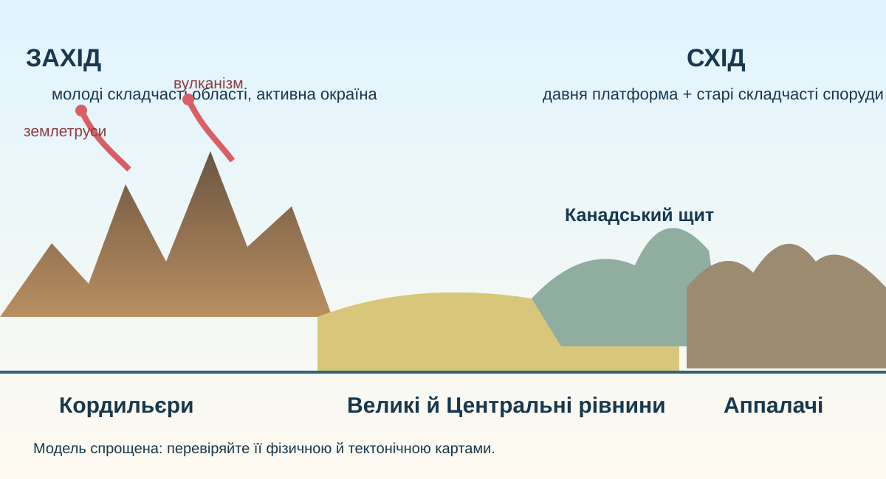

Чому захід материка «зім’ятий»?
1Висуньте гіпотезу
На фізичній карті Північної Америки високі гори тягнуться переважно вздовж заходу. Що найкраще це пояснює?

Фізична форма + геологічний вік = пояснення


А. Захід
За USGS-картою опишіть дві ознаки, які відрізняють західну частину материка від центральної.
Б. Центр
Чому між Кордильєрами й Аппалачами переважають великі рівнинні простори? Пов’яжіть відповідь із платформою.
В. Схід
Аппалачі значно нижчі за Кордильєри. Який процес міг діяти довше на старіші гори?
Захід → центр → схід: прочитайте рельєф як графік
Уявний профіль уздовж 40° пн. ш.: Тихоокеанське узбережжя → Кордильєри → внутрішні плато й Великі рівнини → Центральні низовини → Аппалачі → Атлантичне узбережжя.
Одна форма рельєфу — дві групи причин
2Розкладіть процеси
Для кожного процесу визначте: внутрішній чи зовнішній?
Позначте всі процеси, а в поясненні вкажіть, які створюють великі структури, а які їх переробляють.
3Контрприклад
Якби рельєф визначався лише тектонікою, чому в Скелястих горах ми бачимо U-подібні долини, морени й льодовикові озера?
Національна служба парків США описує давні підняття гір і пізніше льодовикове моделювання їхньої поверхні.
Чому ресурси не розсипані рівномірно?
Осадові басейни
Які ресурси логічно шукати в потужних осадових товщах?
Магматичні пояси
Які ресурси часто пов’язані з магматизмом і гідротермальними процесами?
Давній щит
Чому Канадський щит важливий для рудних ресурсів?
Зіставте відео з картою
Три перевірювані твердження
Сильна відповідь містить не лише факт, а й джерело перевірки: фізична карта / USGS / OpenStreetMap.
Відкрийте теорію лише після власного висновку
Тектонічна основа
Центральна й північно-східна частини материка пов’язані з давньою Північноамериканською платформою. Її вихід кристалічного фундаменту утворює Канадський щит. На заході простягається молодший і складніший Кордильєрський пояс, де тектонічні процеси залишаються активними.
Рельєф
На заході — високі Кордильєри; у центрі — Великі й Центральні рівнини; на сході — старі, сильніше зруйновані Аппалачі. Це не випадковий набір форм: він відображає різний геологічний вік і будову.
Зовнішні сили
Льодовики, річки, вивітрювання й схилові процеси переробляють тектонічно створений рельєф. Особливо помітний слід материкового зледеніння на Канадському щиті й у районі Великих озер.
Корисні копалини
Осадові басейни сприяють накопиченню паливних ресурсів, давні кристалічні масиви — рудних, а магматичні й гідротермальні процеси Кордильєр — родовищ багатьох кольорових і благородних металів.
Доведіть тезу, а не повторіть її
C — Claim
Сформулюйте тезу: чому рельєф Північної Америки асиметричний?
E — Evidence
Наведіть щонайменше 3 незалежні докази: карта рельєфу, геологічна карта, приклад зовнішнього процесу.
R — Reasoning
Поясніть механізм, який зв’язує докази з тезою.
§44 + мінікейс
Прочитайте §44 «Які особливості тектонічної будови та рельєфу Північної Америки». Оберіть один об’єкт — Деналі, Великий каньйон, Єллоустоун, Великі озера або Аппалачі — і складіть 4-реченевий «геологічний паспорт»: де → яка структура → які внутрішні/зовнішні процеси → який сучасний рельєф.
Спочатку представтесь
На чому побудовано урок
USGS — The North America Tapestry of Time and Terrain · USGS — Geologic Map of North America · NPS — Plate Tectonics & Our National Parks · OpenStreetMap · NASA Worldview · Copernicus Browser.